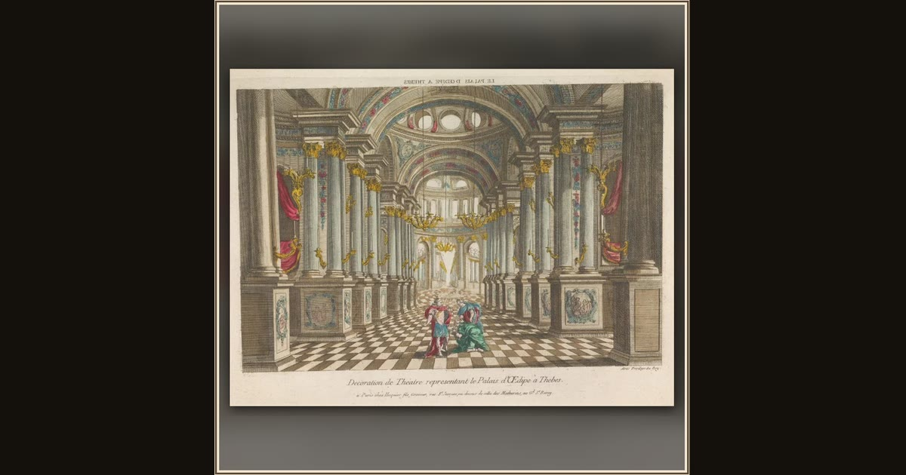

Gezicht op het interieur van het paleis van Oedipus te Thebe
Jacques Gabriel Huquier (mentioned on object) · 1735 - 1805 · rijksmuseum
A hand-coloured stage design shows the interior of Oedipus' palace at Thebes; the play opens with Oedipus addressing suppliants who carry wreathed branches (1). Explore its place in Sophocles's Plays, Oedipus Tyrannus, line 1.